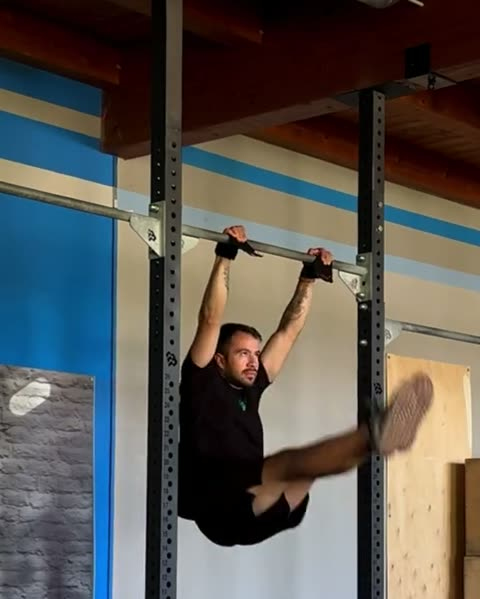
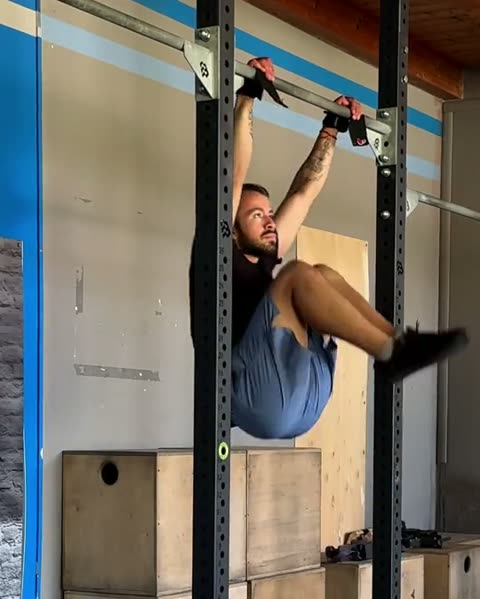
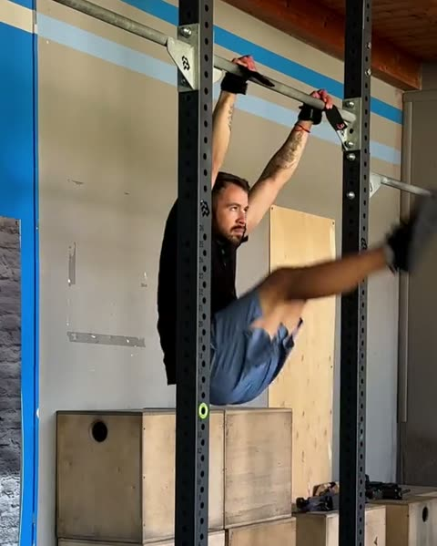
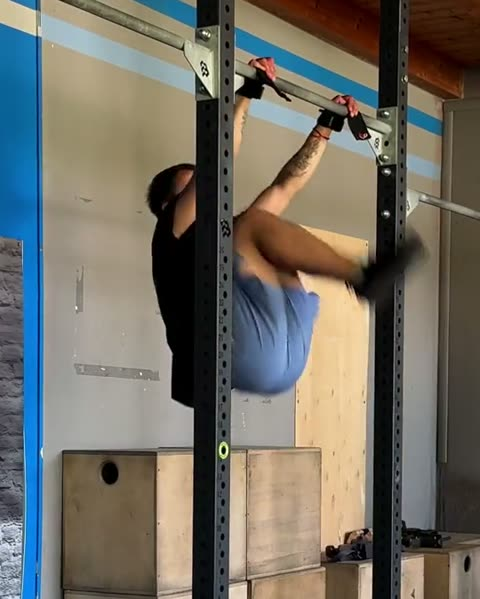
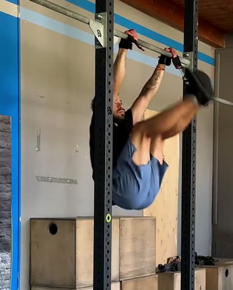

Guida gratuita
Toes to Bar:
da dove parti
Sei test per trovare il tuo gradino. Quattro esercizi per salirlo.
Filipe Ramos · coach di ginnastica · @coachfiliperamos
Scarica il PDFIl toes to bar non arriva a forza di calci. Arriva quando hai salito le altezze in mezzo: prima le ginocchia al petto, poi i piedi, poi le ginocchia alle spalle, e solo alla fine il calcio verso la sbarra.
Quasi tutti, appena hanno il kip, provano subito a toccare la sbarra. I piedi si fermano a metà e ogni tentativo diventa un calcio alla cieca. Questa è la scala che uso con i miei atleti, la stessa del programma First Kipping Toes to Bar dell'app FAR Training.
1. Il test: trova il tuo gradino
Fai i test in ordine, riposando quanto ti serve tra uno e l'altro. Ti fermi al primo che non passi: quello è il tuo gradino.
-

1Kipping Leg Raise
8 ripetizioni consecutive. Le gambe salgono con il kip, braccia tese.
-

2Kipping Knees to Chest
8 ripetizioni consecutive. Le ginocchia arrivano al petto a ogni ripetizione.
-

3Kipping Feet to Chest Height
8 ripetizioni consecutive. I piedi arrivano all'altezza del petto a ogni ripetizione.
-

4Kipping Knees to Shoulders
8 ripetizioni consecutive. Le ginocchia arrivano all'altezza delle spalle a ogni ripetizione.
-

5Kipping Knees to Shoulders + Kick
5 ripetizioni consecutive. Ginocchia all'altezza delle spalle, poi calci le gambe verso la sbarra.
-
6
Kipping Toes to Bar
1 ripetizione. Entrambi i piedi toccano la sbarra tra le mani.
Li passi tutti e sei? Il toes to bar ce l'hai. Adesso si tratta di legarli.
2. Cosa allenare sul tuo gradino
Quattro esercizi per gradino: un hollow, uno strict, uno swing e il kip all'altezza che ti manca. Sono le dosi con cui si parte nell'app. Quando il lavoro diventa facile, rifai il test del tuo gradino.
Gradino 1 Non passi il Kipping Leg Raise
| Esercizio | Dose | Recupero |
|---|---|---|
| Tuck Hollow Hold | 3 × 10" | 30" |
| Strict Knees Over the Hips | 3 × 5 | 1' |
| Beat Swing | 3 × 10 | 30" |
| Kipping Knees Over the Hips | 3 × 8 | 45" |
Gradino 2 Non passi il Kipping Knees to Chest
| Esercizio | Dose | Recupero |
|---|---|---|
| One Leg Hollow Hold (No Arms) | 4 × 10" | 30" |
| One Leg Strict Leg Raise | 3 × 5 | 1' |
| Kipping | 3 × 10 | 30" |
| Kipping Leg Raise | 3 × 8 | 45" |
Gradino 3 Non passi il Kipping Feet to Chest Height
| Esercizio | Dose | Recupero |
|---|---|---|
| One Leg + 45° Hollow Hold | 4 × 10" | 30" |
| Strict Leg Raise | 3 × 5 | 1' |
| Open Kipping | 3 × 10 | 30" |
| Kipping Knees to Chest Height | 3 × 8 | 45" |
Gradino 4 Non passi il Kipping Knees to Shoulders
| Esercizio | Dose | Recupero |
|---|---|---|
| Full Hollow Hold (No Arms) | 3 × 10" | 30" |
| Strict Knees to Chest | 3 × 5 | 1' |
| Open Kipping | 3 × 10 | 30" |
| Kipping Feet to Chest Height | 3 × 8 | 45" |
Gradino 5 Non passi il Knees to Shoulders + Kick
| Esercizio | Dose | Recupero |
|---|---|---|
| Hollow Hold Arms 90° | 3 × 10" | 30" |
| Strict Knees to Chest | 3 × 6 | 1' |
| Open Kipping | 3 × 10 | 30" |
| Kipping Knees to Shoulders | 3 × 8 | 45" |
Gradino 6 Non passi il Kipping Toes to Bar
| Esercizio | Dose | Recupero |
|---|---|---|
| Full Hollow Hold | 3 × 10" | 30" |
| Strict Knees to Chest | 3 × 7 | 1' |
| Open Kipping | 3 × 10 | 30" |
| Kipping Knees to Shoulders + Kick | 3 × 5 | 45" |
Il programma completo
Nell'app FAR Training ogni gradino è una fase intera: sei sessioni brevi, la progressione delle dosi giorno per giorno, il video di ogni esercizio e il test di fase alla fine. Il programma First Kipping Toes to Bar arriva sull'app: segui @fartraining per sapere quando esce.
Non sai se hai passato un test? Mandami il video in DM su @coachfiliperamos e ti dico da che gradino partire.
Apri @coachfiliperamos